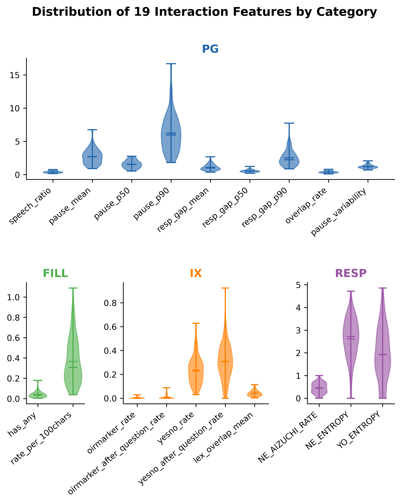
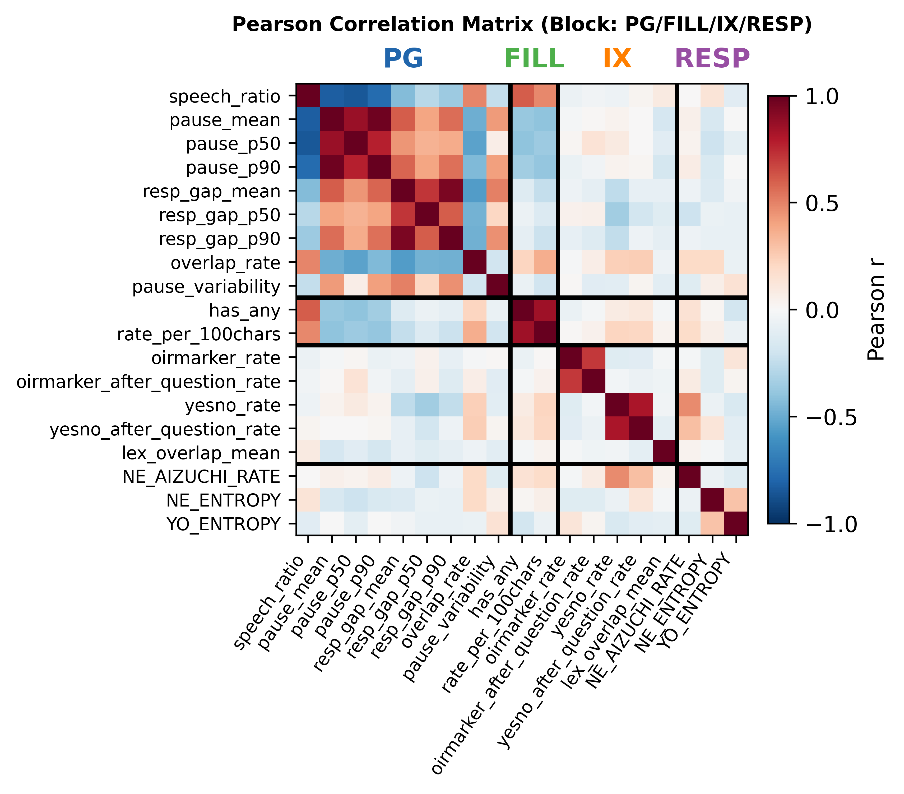
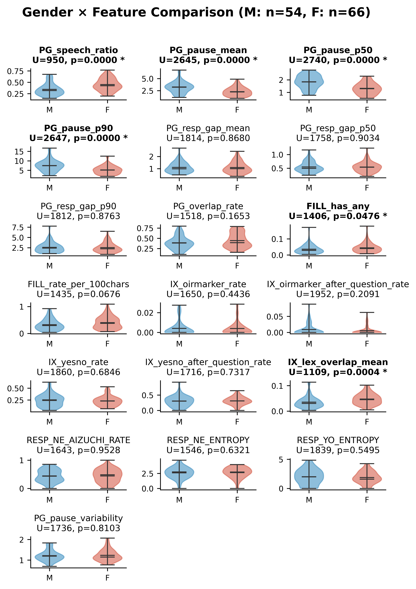
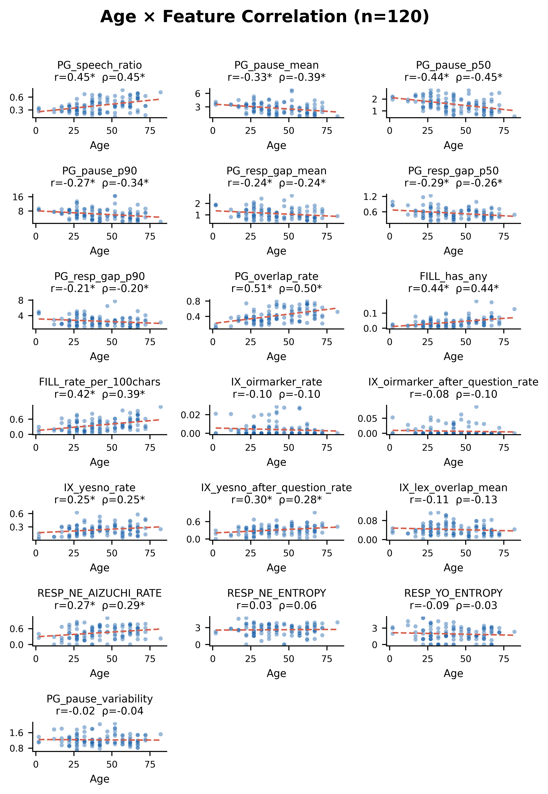
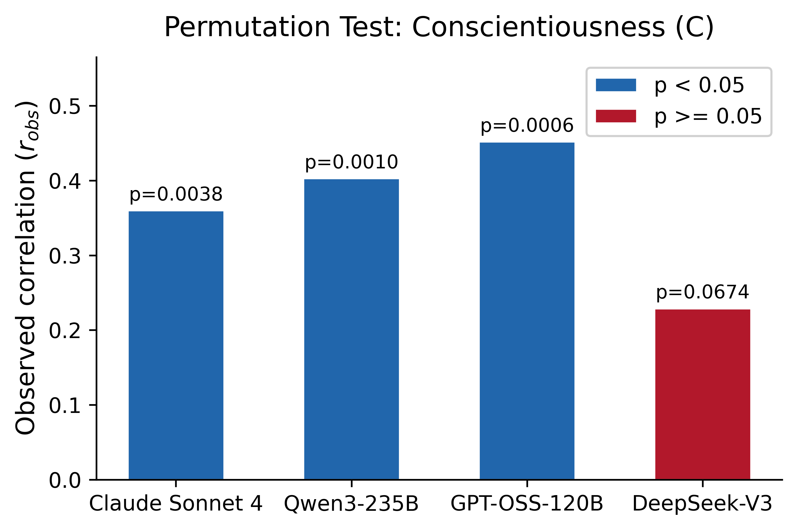
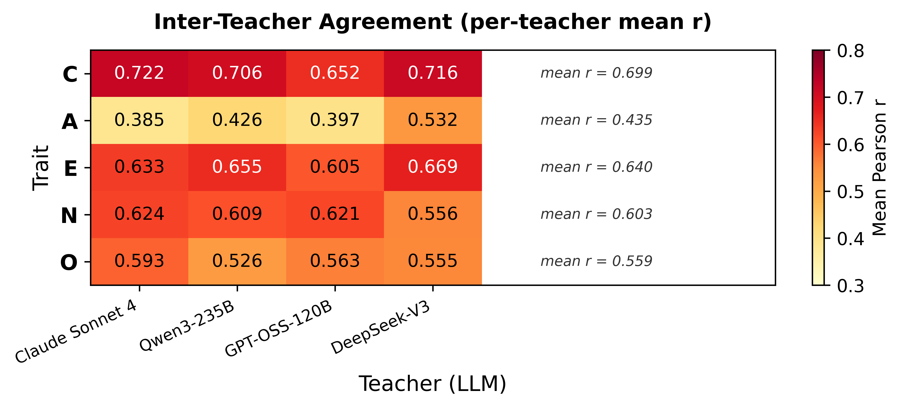
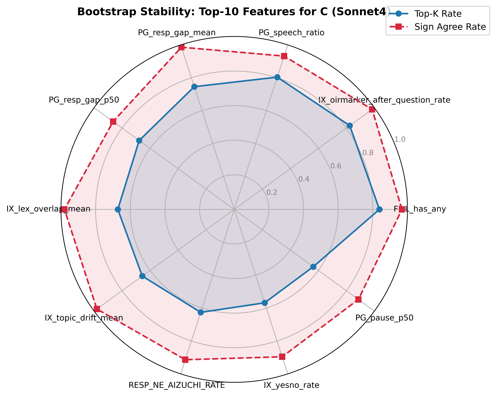

Slide 1 / 6
提案特徴量の分布

18特徴量は適度なばらつきを持ち、個人差を捉える指標として有用である。
1 / 6 | next →
Slide 2 / 6
カテゴリ内/間相関

同一カテゴリ内で高相関を示す一方、カテゴリ間は独立性が高い。
← prev | 2 / 6 | next →
Slide 3 / 6
コーパス基本情報との関連


性別・年齢と一部特徴量に有意な関連が認められた。
← prev | 3 / 6 | next →
Slide 4 / 6
Big5との関連 — Permutation Test

Conscientiousness（C）は4教師中3教師で有意であり、教師非依存の頑健性を示す。
← prev | 4 / 6 | next →
Slide 5 / 6
Teacher間一致度

C: mean r=0.699で最高であり、仮想教師として最も安定している。
← prev | 5 / 6 | next →
Slide 6 / 6
Bootstrap Top Drivers

FILL_has_any, IX_oirmarker_after_question_rate, PG_speech_ratioが上位ドライバーである。
← prev | 6 / 6